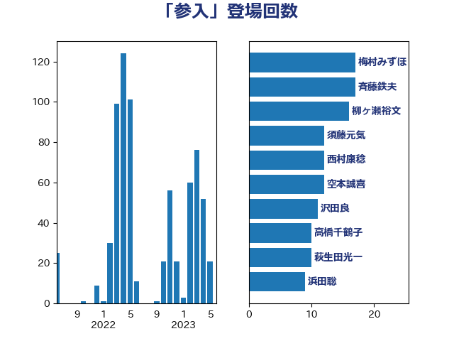

単語「参入」

| 梅村みずほ | 日本維新の会 | 17 回 |
| 斉藤鉄夫 | 公明党 | 17 回 |
| 柳ヶ瀬裕文 | 日本維新の会 | 16 回 |
| 須藤元気 | 無所属 | 12 回 |
| 西村康稔 | 自由民主党 | 12 回 |
| 空本誠喜 | 日本維新の会 | 12 回 |
| 沢田良 | 日本維新の会 | 11 回 |
| 高橋千鶴子 | 日本共産党 | 10 回 |
| 萩生田光一 | 自由民主党 | 10 回 |
| 浜田聡 | NHK党 | 9 回 |
| 池畑浩太朗 | 日本維新の会 | 8 回 |
| 武部新 | 自由民主党 | 8 回 |
| 岸田文雄 | 自由民主党 | 8 回 |
| 音喜多駿 | 日本維新の会 | 7 回 |
| 神津たけし | 立憲民主党 | 7 回 |
| 加藤勝信 | 自由民主党 | 7 回 |
| 金子恭之 | 自由民主党 | 6 回 |
| 市村浩一郎 | 日本維新の会 | 6 回 |
| 下野六太 | 公明党 | 6 回 |
| 上田清司 | 国民民主党 | 6 回 |
| 鬼木誠 | 立憲民主党 | 5 回 |
| 緑川貴士 | 立憲民主党 | 5 回 |
| 牧島かれん | 自由民主党 | 5 回 |
| 仁木博文 | 無所属 | 5 回 |
| 野村哲郎 | 自由民主党 | 4 回 |
| 紙智子 | 日本共産党 | 4 回 |
| 篠原豪 | 立憲民主党 | 4 回 |
| 稲津久 | 公明党 | 4 回 |
| 熊田裕通 | 自由民主党 | 4 回 |
| 浅田均 | 日本維新の会 | 4 回 |
| 川田龍平 | 立憲民主党 | 4 回 |
| 岡田直樹 | 自由民主党 | 4 回 |
| 小寺裕雄 | 自由民主党 | 4 回 |
| 和田有一朗 | 日本維新の会 | 4 回 |
| 井上哲士 | 日本共産党 | 4 回 |
| 中司宏 | 日本維新の会 | 4 回 |
| 青柳仁士 | 日本維新の会 | 3 回 |
| 青山繁晴 | 自由民主党 | 3 回 |
| 長友慎治 | 国民民主党 | 3 回 |
| 鈴木俊一 | 自由民主党 | 3 回 |
| 遠藤良太 | 日本維新の会 | 3 回 |
| 芳賀道也 | 国民民主党 | 3 回 |
| 石橋通宏 | 立憲民主党 | 3 回 |
| 田嶋要 | 立憲民主党 | 3 回 |
| 湯原俊二 | 立憲民主党 | 3 回 |
| 清水貴之 | 日本維新の会 | 3 回 |
| 浅野哲 | 国民民主党 | 3 回 |
| 河西宏一 | 公明党 | 3 回 |
| 横山信一 | 公明党 | 3 回 |
| 森屋隆 | 立憲民主党 | 3 回 |
| 末松義規 | 立憲民主党 | 3 回 |
| 斎藤アレックス | 国民民主党 | 3 回 |
| 徳永エリ | 立憲民主党 | 3 回 |
| 山本香苗 | 公明党 | 3 回 |
| 寺田静 | 無所属 | 3 回 |
| 勝俣孝明 | 自由民主党 | 3 回 |
| 井坂信彦 | 立憲民主党 | 3 回 |
| 串田誠一 | 日本維新の会 | 3 回 |
| 一谷勇一郎 | 日本維新の会 | 3 回 |
| 高木かおり | 日本維新の会 | 2 回 |
| 青山大人 | 立憲民主党 | 2 回 |
| 道下大樹 | 立憲民主党 | 2 回 |
| 角田秀穂 | 公明党 | 2 回 |
| 西岡秀子 | 国民民主党 | 2 回 |
| 舟山康江 | 国民民主党 | 2 回 |
| 竹詰仁 | 国民民主党 | 2 回 |
| 福重隆浩 | 公明党 | 2 回 |
| 石井正弘 | 自由民主党 | 2 回 |
| 矢倉克夫 | 公明党 | 2 回 |
| 田村智子 | 日本共産党 | 2 回 |
| 玉木雄一郎 | 国民民主党 | 2 回 |
| 片山大介 | 日本維新の会 | 2 回 |
| 渡辺創 | 立憲民主党 | 2 回 |
| 森本真治 | 立憲民主党 | 2 回 |
| 梶山弘志 | 自由民主党 | 2 回 |
| 梅谷守 | 立憲民主党 | 2 回 |
| 松沢成文 | 日本維新の会 | 2 回 |
| 松本剛明 | 自由民主党 | 2 回 |
| 後藤茂之 | 自由民主党 | 2 回 |
| 山田美樹 | 自由民主党 | 2 回 |
| 山崎誠 | 立憲民主党 | 2 回 |
| 山崎正恭 | 公明党 | 2 回 |
| 山岡達丸 | 立憲民主党 | 2 回 |
| 山井和則 | 立憲民主党 | 2 回 |
| 小林鷹之 | 自由民主党 | 2 回 |
| 小宮山泰子 | 立憲民主党 | 2 回 |
| 小倉將信 | 自由民主党 | 2 回 |
| 宮崎雅夫 | 自由民主党 | 2 回 |
| 守島正 | 日本維新の会 | 2 回 |
| 大野泰正 | 自由民主党 | 2 回 |
| 大島敦 | 立憲民主党 | 2 回 |
| 城井崇 | 立憲民主党 | 2 回 |
| 吉良よし子 | 日本共産党 | 2 回 |
| 北神圭朗 | 無所属 | 2 回 |
| 北村経夫 | 自由民主党 | 2 回 |
| 佐々木紀 | 自由民主党 | 2 回 |
| 今枝宗一郎 | 自由民主党 | 2 回 |
| 中西祐介 | 自由民主党 | 2 回 |
| 黄川田仁志 | 自由民主党 | 1 回 |
| 高木真理 | 立憲民主党 | 1 回 |
| 高市早苗 | 自由民主党 | 1 回 |
| 馬場雄基 | 立憲民主党 | 1 回 |
| 青柳陽一郎 | 立憲民主党 | 1 回 |
| 阿部知子 | 立憲民主党 | 1 回 |
| 門山宏哲 | 自由民主党 | 1 回 |
| 鈴木義弘 | 国民民主党 | 1 回 |
| 金子恵美 | 立憲民主党 | 1 回 |
| 野田聖子 | 自由民主党 | 1 回 |
| 遠藤敬 | 日本維新の会 | 1 回 |
| 足立康史 | 日本維新の会 | 1 回 |
| 西野太亮 | 自由民主党 | 1 回 |
| 藤田文武 | 日本維新の会 | 1 回 |
| 藤巻健太 | 日本維新の会 | 1 回 |
| 落合貴之 | 立憲民主党 | 1 回 |
| 船橋利実 | 自由民主党 | 1 回 |
| 舞立昇治 | 自由民主党 | 1 回 |
| 羽田次郎 | 立憲民主党 | 1 回 |
| 米山隆一 | 立憲民主党 | 1 回 |
| 竹谷とし子 | 公明党 | 1 回 |
| 福島伸享 | 無所属 | 1 回 |
| 神谷裕 | 立憲民主党 | 1 回 |
| 神谷政幸 | 自由民主党 | 1 回 |
| 石川大我 | 立憲民主党 | 1 回 |
| 石垣のりこ | 立憲民主党 | 1 回 |
| 田村貴昭 | 日本共産党 | 1 回 |
| 田村憲久 | 自由民主党 | 1 回 |
| 田村まみ | 国民民主党 | 1 回 |
| 田名部匡代 | 立憲民主党 | 1 回 |
| 猪瀬直樹 | 日本維新の会 | 1 回 |
| 浜野喜史 | 国民民主党 | 1 回 |
| 泉田裕彦 | 自由民主党 | 1 回 |
| 泉健太 | 立憲民主党 | 1 回 |
| 河野義博 | 公明党 | 1 回 |
| 江田憲司 | 立憲民主党 | 1 回 |
| 水野素子 | 立憲民主党 | 1 回 |
| 櫻井充 | 自由民主党 | 1 回 |
| 横沢高徳 | 立憲民主党 | 1 回 |
| 枝野幸男 | 立憲民主党 | 1 回 |
| 林芳正 | 自由民主党 | 1 回 |
| 松本尚 | 自由民主党 | 1 回 |
| 松山政司 | 自由民主党 | 1 回 |
| 本村伸子 | 日本共産党 | 1 回 |
| 日下正喜 | 公明党 | 1 回 |
| 掘井健智 | 日本維新の会 | 1 回 |
| 庄子賢一 | 公明党 | 1 回 |
| 平山佐知子 | 無所属 | 1 回 |
| 川崎ひでと | 自由民主党 | 1 回 |
| 岸真紀子 | 立憲民主党 | 1 回 |
| 岩谷良平 | 日本維新の会 | 1 回 |
| 山田賢司 | 自由民主党 | 1 回 |
| 山田俊男 | 自由民主党 | 1 回 |
| 山添拓 | 日本共産党 | 1 回 |
| 山本太郎 | れいわ新選組 | 1 回 |
| 山本博司 | 公明党 | 1 回 |
| 山本剛正 | 日本維新の会 | 1 回 |
| 山下芳生 | 日本共産党 | 1 回 |
| 小野泰輔 | 日本維新の会 | 1 回 |
| 小島敏文 | 自由民主党 | 1 回 |
| 安江伸夫 | 公明党 | 1 回 |
| 奥野総一郎 | 立憲民主党 | 1 回 |
| 奥下剛光 | 日本維新の会 | 1 回 |
| 大島九州男 | れいわ新選組 | 1 回 |
| 大岡敏孝 | 自由民主党 | 1 回 |
| 国定勇人 | 自由民主党 | 1 回 |
| 和田政宗 | 自由民主党 | 1 回 |
| 吉川元 | 立憲民主党 | 1 回 |
| 務台俊介 | 自由民主党 | 1 回 |
| 加藤竜祥 | 自由民主党 | 1 回 |
| 保岡宏武 | 自由民主党 | 1 回 |
| 住吉寛紀 | 日本維新の会 | 1 回 |
| 今井絵理子 | 自由民主党 | 1 回 |
| 井林辰憲 | 自由民主党 | 1 回 |
| 中谷一馬 | 立憲民主党 | 1 回 |
| 中田宏 | 自由民主党 | 1 回 |
| 中川宏昌 | 公明党 | 1 回 |
| 上月良祐 | 自由民主党 | 1 回 |
| ながえ孝子 | 無所属 | 1 回 |